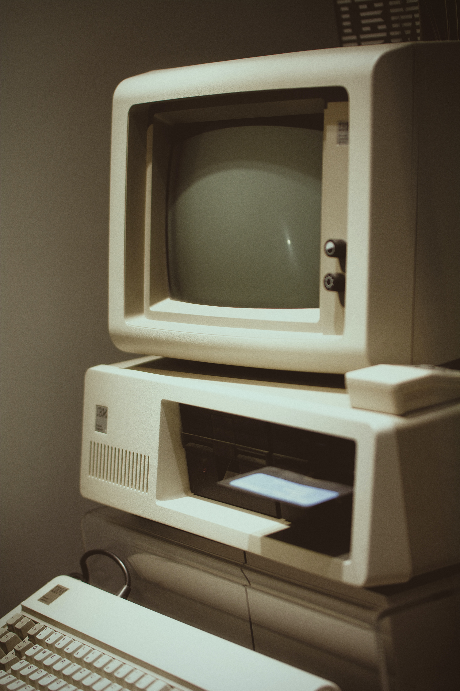

IBM
BM began designing and manufacturing calculators in the 1930s, using the technology of their own punch card processing equipment. In 1944, IBM together with Harvard University financed the invention of the Mark 1 computer, the first machine to compute long calculations automatically. By 1953, IBM was ready to completely produce their own computers, which began with the IBM 701 EDPM, their first commercially successful general-purpose computer. And the 701 was just the beginning.